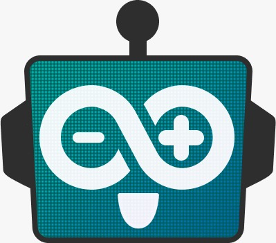
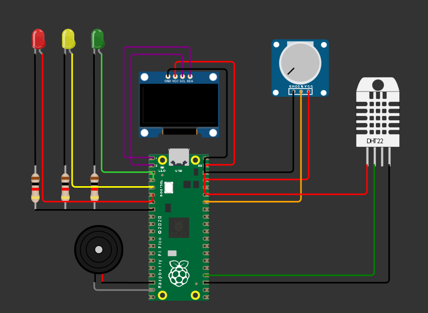

Engenharia da Computação
Universidade Federal do Ceará
Sou um entusiasta de tecnologia, sistemas embarcados e automação.
Tenho experiência em análise de dados e sistemas embarcados e atualmente estou em um projeto para iniciar estudantes do ensino fundamental, ingressantes e veteranos na faculdade em Arduino.


Email: atila199901@gmail.com
GitHub: github.com/Atila-dev